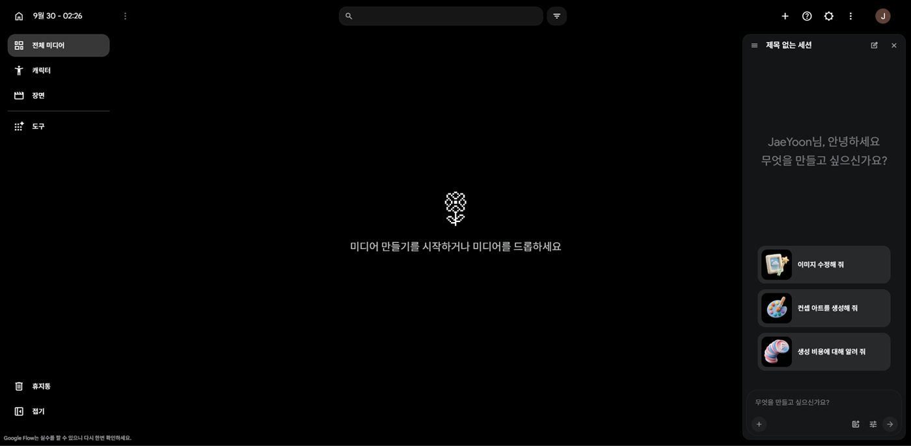
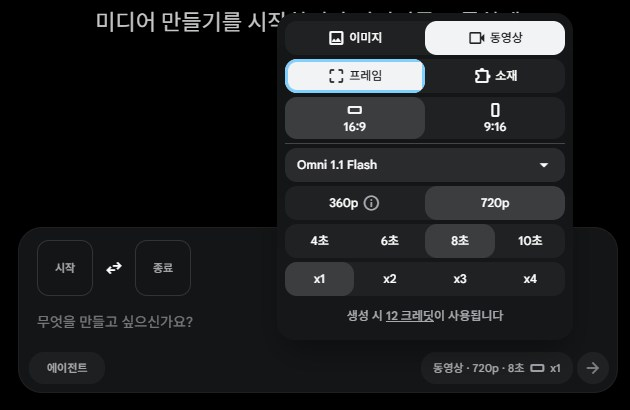

DAY 04AI 콘텐츠제작
Google Flow로 광고 영상 장면 만들기
이미지를 만들 때는 "한 장이 어떻게 보일까?"를 생각했습니다. 영상에서는 하나가 더 필요합니다. "이 화면에서 무엇이 움직일까?" 글만으로 영상을 만들고, 이미지를 움직이고, 같은 제품이 이어지는 광고 장면 3개까지 만듭니다.
1.오늘의 수업
이미지를 만들어 본, 영상은 처음인 초보자
Flow로 이미지 → 이미지 움직이기 → 광고 장면 3개
무엇을 움직이고 무엇을 유지할지, 카메라는 어떻게 움직일지 나눠서 설명해 영상을 만들기
Google Flow (이미지·영상), Gemini (장면 나누기)
가상의 음료 브랜드 '톡톡레몬'(레몬 탄산수)이 짧은 SNS 광고 영상을 요청했습니다.
"여름 신제품이에요. 시원하고 상큼한 느낌의 짧은 영상 장면들을 만들어 주세요."
'톡톡레몬'은 수업용 가상 브랜드입니다.
오늘 쓸 크레딧 — 영상 8~10개, 약 150크레딧 (한 번에 1개 생성 기준). Google AI Pro 계정에는 약 1000크레딧이 있고, 영상 1개에 약 15크레딧이 듭니다. 이미지는 크레딧이 들지 않습니다. 정확한 값은 만들기 전에 화면에 표시됩니다.
2.오늘 배우는 내용 & 전체 흐름
3.이미지와 영상의 차이
1교시
레몬 탄산수 병이 얼음 위에 놓여 있다.
병은 그대로 있고, 표면의 물방울이 천천히 흘러내린다. 카메라는 병을 향해 천천히 다가간다.
영상에서는 "무엇이 보이는가"에 더해 세 가지를 함께 설명합니다.
4.Flow 화면과 크레딧 아끼는 설정
1교시
메뉴 이름과 위치는 업데이트에 따라 다를 수 있습니다. 막히면 Gemini에게 "Google Flow에서 [하고 싶은 것]을 하려면 어디를 눌러야 해?"라고 물어보세요.
STEP 01 새 프로젝트 만들기
labs.google/flow 접속 → Google 계정 로그인 → 새 프로젝트 → 이름 "04_톡톡레몬_이름"
STEP 02 화면 둘러보기





동영상 — 크레딧 사용
- · 이미지를 넣지 않으면 글로만 만든 영상
- · 프레임 — 시작 칸에 이미지를 넣어 그 이미지에서 출발
- · 소재 — 여러 참고 이미지(제품·배경)를 섞어서
- · 화질 · 길이(4~10초) · 개수를 고르면 아래에 예상 크레딧이 보입니다
입력창의 에이전트를 켜면 설정을 고르지 않고 대화로 부탁할 수도 있습니다. 오늘은 설정을 직접 고르며 익히고, 에이전트는 DAY 07 뮤직비디오에서 써 봅니다.
STEP 03 크레딧 아끼는 설정 — 꼭 확인
- 개수 — x1. 여러 개를 한 번에 만들면 그만큼 크레딧이 듭니다
- 길이 — 장면에 맞게 내가 정합니다. 짧은 순간이면 짧게, 움직임이 이어지면 길게
- 만들기 전에 아래에 표시되는 예상 크레딧과 남은 크레딧을 확인
- 크레딧 사용을 물으면 승인. 항상 승인은 누르지 않기 — 다음부터 묻지 않고 바로 쓰입니다
결과를 보고 "무엇을 고칠지" 정한 뒤 다시 만듭니다.
5.영상 프롬프트 5칸
1교시
| 칸 | 묻는 것 | 예 |
|---|---|---|
| 대상 | 무엇이 나오나 | 레몬 조각이 꽂힌 투명한 탄산수 병 |
| 행동 | 무엇이 움직이나 | 병 속 기포가 천천히 올라온다 |
| 환경 | 어디인가 | 얼음이 깔린 노란 스튜디오 |
| 카메라 | 카메라는 어떻게 | 병을 향해 천천히 다가간다 |
| 분위기 | 어떤 느낌인가 | 상큼하고 시원한 여름 음료 광고 |
6.실습: 글로만 영상 만들기
1교시 · 실습 SET 01 · 영상 1~2개
Flow 설정에서 동영상을 고르고, 이미지 없이 글만 넣어 만듭니다.
결과 확인 — 마음에 드는지보다 "요청대로 됐는지"를 봅니다
- 제품이 잘 보이나?
- 요청한 움직임(기포·물방울)이 나오나?
- 카메라가 요청한 방향으로 움직이나?
- 이상하게 녹거나 모양이 바뀌는 곳은 없나?
"시원한 탄산수 광고 영상 만들어줘"
AI가 병 모양·배경·움직임·카메라를 대부분 마음대로 정합니다.
원하는 방향이 있을 때는 5칸을 채워 AI가 정할 부분을 줄입니다.
7.움직임 · 카메라 키워드
1교시
쓰기 전에 알아둘 키워드 — 움직임과 카메라
한국어로 써도 Flow가 잘 알아듣습니다. 영어로 바꿀 필요 없어요.
움직임을 많이 넣을수록 원하는 대로 나오기 어렵습니다.
8.실습: 영상용 이미지 만들기
1교시 · 실습 SET 02 · Flow 이미지 (크레딧 0)
Flow 설정에서 이미지를 고르고 개수를 x2~x4로 둡니다. 크레딧이 들지 않으니 여러 장 받아 고르세요. (Gemini에서 만들어도 됩니다.)
영상의 첫 화면이 될 이미지를 만듭니다. 영상용 이미지는 화려함보다 "무엇이 움직일지 알기 쉬운 것"이 좋습니다. 주인공은 또렷하게, 배경과 잘 구분되게, 소품은 적게.
마음에 드는 이미지를 다운로드해서 "레몬_시작"으로 저장합니다. 오늘 계속 씁니다.
9.실습: 시작 프레임으로 이미지 움직이기
1교시 · 실습 SET 03 · 영상 1~2개
시작 프레임
영상의 첫 장면으로 쓰는 이미지입니다. 내가 준비한 이미지에서 출발하므로 제품 모양을 지키기 쉽습니다.
Flow 설정에서 동영상 → 프레임 → 입력창의 시작 칸에 "레몬_시작" 이미지 넣기
비교하기
AI가 화면을 처음부터 만듦 → 매번 제품 모양이 다름
내가 준비한 이미지에서 출발 → 제품·캐릭터를 유지하기 좋음
10.끝 프레임은 무엇일까?
2교시 · 설명만
Flow에는 시작 이미지와 함께 끝 이미지도 넣는 기능이 있습니다. 시작 화면에서 출발해 끝 화면에 도착하는 영상을 만들어 줍니다.
이 수업에서는 쓰지 않아요
- · 두 이미지가 조금만 달라도 중간에 제품이 녹거나 바뀌는 등 어색해지기 쉽습니다
- · 중간에 무엇이 일어날지 AI가 정하기 때문에 원하는 흐름이 잘 나오지 않습니다
그래서 시작 프레임 + 글로 설명하는 방식으로 장면을 만듭니다.
11.실습: 같은 이미지, 카메라만 바꾸기
2교시 · 실습 SET 04 · 영상 2개
먼저 알기 — 유지할 것과 움직일 것
- · 제품 모양은 그대로
- · 제품 위치는 바꾸지 말고
- · 배경 색은 그대로
- · 인물의 얼굴과 옷은 그대로
- · 물방울만 흘러내리게
- · 배경의 나뭇잎만 흔들리게
- · 카메라만 다가가게
영상이 이상할 때는 프롬프트를 전부 바꾸지 않고 "[유지할 것]은 그대로, [고칠 것]만 바꿔 줘"로 한 가지씩 고칩니다.
"레몬_시작"을 다시 시작 프레임으로 넣고 카메라만 바꾸기
비교하기 — SET 03 영상과 함께
꼭 기억할 한 마디 — "카메라 고정"
카메라가 제멋대로 돌거나 흔들리면 제품 모양도 쉽게 무너집니다. 장면이 자꾸 이상하면 요청 끝에 "카메라 고정"을 붙여 보세요. 움직임은 제품 주변에만 맡기면 결과가 훨씬 안정됩니다.
12.광고를 장면으로 나누기
2교시 · 실습 SET 05 · Gemini
"15초 광고 만들어 줘"라고 한 번에 요청하지 않습니다. AI 영상은 한 번에 몇 초짜리 장면이 만들어지므로, 짧은 장면을 여러 개 만들어 이어 붙입니다. 장면마다 "왜 이 장면이 필요한지"가 달라야 합니다.
| 장면 | 역할 | 화면 |
|---|---|---|
| SCENE 1 | 제품 등장 | 병이 조용히 서 있고, 카메라가 다가감 |
| SCENE 2 | 상큼함 표현 | 레몬 조각이 탄산수 속으로 떨어지고 기포가 터짐 |
| SCENE 3 | 마지막 컷 | 병 뒤로 물보라, 카메라 고정 |
이어서 요청하기
13.실습: 같은 제품이 이어지는 장면 3개
2교시 · 실습 SET 06 · 영상 3~4개
장면이 따로 만들어지면 제품 모양·색이 장면마다 달라질 수 있습니다. 그래서 두 가지를 지킵니다.
- · 시작 프레임 방식 — "레몬_시작"처럼 같은 제품이 나온 이미지를 장면마다 준비
- · 소재 방식 — 제품 이미지를 소재로 넣고 "첫 번째 이미지의 병을 사용해줘"
예) 레몬 조각이 꽂힌 투명한 병, 노란색과 흰색 위주의 밝은 색감, 상큼한 여름 광고 분위기
다운로드해서 이름 붙이기 — 01_등장 / 02_상큼 / 03_마무리. 파일 이름을 정리해 두면 편집할 때 훨씬 편합니다. 영상이 만들어지는 동안 다음 장면 프롬프트를 미리 써 두세요.
14.실습: 세 장면 이어 보고 한 가지만 고치기
2교시 · 실습 SET 07
세 영상을 순서대로 재생하며 확인하기
- 같은 제품처럼 보이나?
- 색감이 갑자기 달라지지 않나?
- 장면마다 역할이 다른가?
15.막혔을 때 & 더 해 보기
| 이럴 때 | 이렇게 |
|---|---|
| 영상 만드는 데 오래 걸려요 | 정상입니다. 기다리는 동안 다음 장면 프롬프트를 미리 써 두기 |
| 제품 모양이 계속 바뀌어요 | 글로만 만들기 대신 프레임이나 소재 방식으로 바꾸고, 유지 문장 붙이기 |
| 다운로드한 파일이 어디 있는지 몰라요 | 컴퓨터의 "다운로드" 폴더 확인 → "AI콘텐츠제작" 폴더로 옮기기 |
| 크레딧이 빨리 줄어요 | 개수가 x1인지, 화질·길이가 필요 이상으로 높지 않은지 다시 확인 |
빨리 끝났다면 — 더 해 보기
내 주제(커피, 향수, 운동화, 화장품, 여행지 중 하나)로 영상용 이미지를 만들고, 시작 프레임 영상 1개 만들기
16.오늘의 결과물
17.오늘의 핵심 & 다음 수업
영상은 나눠서 설명하기
핵심 — 긴 영상은 짧은 장면으로 나눠 만들고, 같은 이미지와 유지 문장으로 장면을 이어 줍니다.
DAY 05 — CapCut 편집 · 배경음악 · 썸네일
CapCut으로 영상 장면을 자르고 이어 붙이고, 자막과 음악을 넣어 광고 영상을 완성합니다. 오늘 만든 장면이 없어도 괜찮습니다 — 다음 시간 처음에 준비된 요청문으로 바로 만들고 시작합니다.